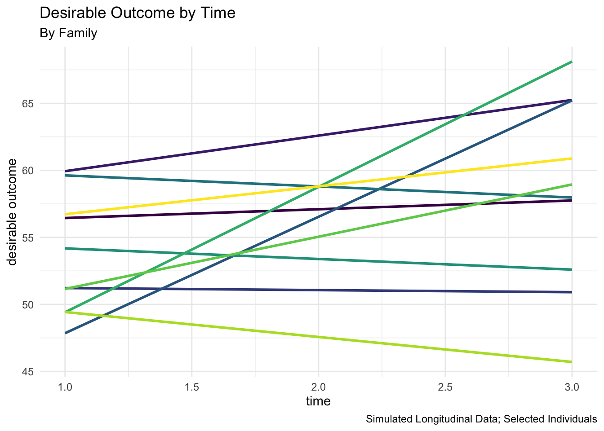

7 The Longitudinal Multilevel Model
“Mathematics is the art of giving the same name to different things.” (Poincare 1908)
Counter-intuitively, and surprisingly, the mathematics of estimating models with cross-sectional clustered data easily generalizes to longitudinal data. In cross sectional clustered data, we imagine individuals clustered in neighborhoods, schools, or countries.
| Level | Example(s) |
|---|---|
| 1 | Individuals |
| 2 | Schools |
| Neighborhoods | |
| Countries |
In longitudinal data, we consider the first level to be that of time points, or study waves, which we sometimes call the person-observation. The second level is then the individual.
| Level | Example(s) |
|---|---|
| 1 | Timepoints |
| 2 | Individuals |
While it is less common, we could then easily add additional clustering to this longitudinal model, for example, clustering of individuals inside social units.
| Level | Example(s) |
|---|---|
| 1 | Timepoints |
| 2 | Individuals |
| 3 | Schools |
| Neighborhoods | |
| Countries |
7.1 Use Data With Multiple Observations Per Individual
Multilevel data suitable for longitudinal analysis therefore has multiple rows of data per individual. Put another way, every row of data is a person-timepoint.
This method of organizing data is known as the long format. Another way of organizing longitudinal data–which I do not discuss in detail here–is the wide format in which every individual still has only one row of data. In wide data, the different timepoints are in different columns of data.
| id | t | x |
|---|---|---|
| 1 | 1 | 10 |
| 1 | 2 | 20 |
| 1 | 3 | 30 |
| 2 | 1 | 20 |
| 2 | 2 | 30 |
| 2 | 3 | 40 |
| id | x1 | x2 | x3 |
|---|---|---|---|
| 1 | 10 | 20 | 30 |
| 2 | 20 | 30 | 40 |
| Sample of Simulated Data | ||||||
| With Descriptive Statistics For Entire Sample | ||||||
| id | t | country | warmth | physical_punishment | outcome | |
|---|---|---|---|---|---|---|
| 1 | 1 | 15 | 129.65 | 84.86 | 685.30 | |
| 1 | 2 | 15 | 124.11 | 84.86 | 675.84 | |
| 1 | 3 | 15 | 126.90 | 84.86 | 691.19 | |
| 2 | 1 | 24 | 106.24 | 90.91 | 330.52 | |
| 2 | 2 | 24 | 128.29 | 90.91 | 479.60 | |
| 2 | 3 | 24 | 142.19 | 90.91 | 580.56 | |
| 3 | 1 | 11 | 83.41 | 95.94 | −130.77 | |
| 3 | 2 | 11 | 106.13 | 95.94 | 127.75 | |
| 3 | 3 | 11 | 101.89 | 95.94 | 66.40 | |
| 4 | 1 | 8 | 90.59 | 96.00 | 100.51 | |
| average | 2.20 | 1.90 | 15.80 | 113.94 | 91.11 | 360.69 |
| SD | 1.03 | 0.88 | 6.09 | 19.05 | 4.84 | 303.20 |

7.2 The Equation
When data are in long format, the following equation is applicable.
\[\text{outcome}_{itj} = \beta_0 + \beta_1 \text{parental warmth}_{itj} + \beta_2 \text{physical punishment}_{itj} + \beta_3 \text{time}_{itj} \ + \tag{7.1}\]
\[u_{0j} + u_{1j} \times \text{parental warmth}_i \ + \] \[v_{0i} + v_{1i} \times t + e_{ij}\] Here I include a random slope (\(u_{1j}\)) at the country level for parental warmth, as well as a random slope (\(v_{1j}\)) at the individual level for time.
7.3 Regression With Simulated Multi-Country Longitudinal Data
The Stata command that we use to analyze this data is:
mixed outcome t warmth physical_punishment || country: warmth || id: t
| longitudinal | ||
|---|---|---|
| t | 4.124 | ** |
| warmth | 4.874 | ** |
| physical_punishment | -3.054 | ** |
| Intercept | 5.860 | |
| var(warmth) | 0.890 | |
| var(_cons) | 415.073 | |
| var(_cons) | 0.000 | |
| var(t) | 0.000 | |
| var(e) | 2660.874 |
** p<.01, * p<.05
Examining the regression results, the results of the model suggest that child outcomes improve over time. Better child outcomes are again associated with parental warmth, and parental use of physical punishment is associated with reduced child outcomes.
7.4 Autocorrelation
When data are ordered by a time variable \(t\), it is possible that observations that are closer together in time will have a higher correlation than observations that are distant in time. In the simplest example, \(e_{i, t=k}\) may be correlated with \(e_{i, t=k-1}\). This phenomenon is known as autocorrelation. As Hooper (2022) would suggest, it may make sense to assume that the correlation between observations “decays with increasing separation in time”.
Most software programs for multilevel modeling allow one to incorporate measures of autocorrelation so that, e.g., \(e_{i,t=3}\) is allowed to be correlated with \(e_{i,t=2}\), which in turn can be correlated with \(e_{i,t=1}\). More complex autocorrelation structures are usually also possible (StataCorp 2021a).
7.5 Causality
7.5.1 The Importance of Causal Reasoning
Causal reasoning is sometimes considered to be a statistical–or even overly technical–concern. Arguably, however, whenever one is using research to make recommendations about interventions, or treatments, or policies, one is engaging in some form of causal reasoning (Duncan and Gibson-Davis 2006).
If one is saying that implementing x would result in beneficial changes in y, one is arguing–at least implicitly–that x is one of the causes of y.
It then behooves one to be explicit about this chain of causal reasoning. For example, to continue one of the substantive examples of this document, if one is going to argue for programs, interventions, or treatments that promote parental warmth, or that discourage parental use of physical punishment with the aim of improving children’s mental health, one must be at least reasonably sure that parental warmth and physical punishment are causes of children’s mental health.
Randomized studies provide the best evidence about the internal validity of causal relationships. However, randomized studies have certain limitations (Diener et al. 2022). First of all–especially in a study with a smaller sample–randomization may not always be perfect, and the control and treatment groups may not be statistically equivalent. Secondly, because of ethical concerns some studies can not be conducted with randomization (Diener et al. 2022). For example, in the study of parenting and child development, children cannot ethically be assigned to parents with different styles of parenting and followed over the long term. Thus, methods that provide rigorous causal estimation with observational methods are necessary (Diener et al. 2022).
Because of the assumed superiority of studies that employ randomization, it is sometimes maintained that correlation is not causation and that studies that do not make use of randomization are only observational and correlational, and that results from observational studies cannot be used to support causal conclusions. However, in an important review (Waddington, Villar, and Valentine 2022) suggested that studies using appropriately quantitative methods can provide causally robust conclusions.
In a statement salient for social research, Duncan and Gibson-Davis (2006) point out the logical inconsistency of writing that does not rigorously address causal processes, but then goes on to suggest interventions or treatment or policies:
“Developmental studies are usually careful to point out when their data do not come from a randomized experiment. As with much of the nonexperimental literature in developmental psychology, most of the articles then go on to assert that, as a consequence, it is impossible to draw causal inferences from the analysis. Indeed, much of their language describing results is couched in terms of ‘associations’ between child care quality and child outcomes. It is not uncommon, however, to see these papers make explicit statements about effects, and others draw explicit policy conclusions. For instance, NICHD (1997, 876) stated, ‘The interaction analyses provided evidence that high-quality child care served a compensatory function for children whose maternal care was lacking.’ On the policy side, NICHD (2002c, 199) asserted, ‘These findings provide empirical support for policies that improve state regulations for caregiver training and child-staff ratios.’”
“One cannot have it both ways. Studies that do not aspire to causal analysis should make no claim whatsoever about effects and draw no policy conclusions. At the same time, it would be a terrible waste of resources to conduct expensive longitudinal studies without attempting to use them for causal modeling.”
Lastly, because of their often small samples, randomized studies may have high internal validity, but much lower external validity, or generalization to larger populations (Diener et al. 2022). This issue of generalizability becomes increasingly salient, when we are reminded of the fact that so little social and psychological research has been conducted outside of North American contexts (Henrich, Heine, and Norenzayan 2010; Draper et al. 2022). It is necessary to make use of broadly representative observational data sets, and appropriately sophisticiated quantitative methods to make causally robust conclusions from observational data.
7.5.2 Formal Criteria of Causality
For x to be a cause of y, one needs the following 3 things to be true (Holland 1986).
- x is (are) associated with (correlated with) y.
- x come(s) before y in time.
- z–or other factors–cannot explain the association of (correlation of) x and y.
If z is omitted from the regression model, then the estimates for \(x \rightarrow y\) (i.e. \(\beta_{x \rightarrow y}\)) will be biased. In the most common scenario \(\beta_{x \rightarrow y}\) will likely be an over-estimate of the effect, and statistical significance of \(\beta_{x \rightarrow y}\) may represent a false positive.
It is likely useful to restate the above abstract statements in terms of the substantive issues that I have been considering so far in this document.
For parenting to be a cause of child outcomes, one needs the following 3 things to be true (Holland 1986).
- parenting is (are) associated with (correlated with) child outcomes.
- parenting come(s) before child outcomes in time.
- SES, community characteristics–or other factors–cannot explain the association of (correlation of) parenting and child outcomes.
If other factors are omitted from the regression model, then the estimates for \(\text{parenting} \rightarrow \text{child outcome}\) (i.e. \(\beta_{\text{parenting} \rightarrow \text{child outcome}}\)) will be biased. In the most common scenario \(\beta_{\text{parenting} \rightarrow \text{child outcome}}\) will likely be an over-estimate of the effect, and statistical significance of \(\beta_{\text{parenting} \rightarrow \text{child outcome}}\) may represent a false positive.
7.5.3 Simpson’s Paradox
Earlier, in Section 6.3, I referred to the idea of multilevel structure wherein failure to account for the clustering of data–omission of \(u_0\) from the equation being estimated–may lead to incorrect conclusions. A closely related phenomenon is that of Simpson’s Paradox (Simpson 1951) wherein omission of a relevant covariate (e.g. SES, community characteristics, country level characteristics) may also lead to dramatically incorrect results.
Statistically, we imagine a situation where the true model is:
\[\text{child outcome}_{it} = \beta_0 + \beta_1 \text{parenting}_{it} + \beta_2 \text{community or country characteristic}_{it} + e_{it}\] If community or country characteristics in fact influence outcome, but are not included in the statistical model, perhaps because they are not measured in the data, then the estimate of \(\beta_1\) for parenting will be biased. See Figure 7.4 for an illustration.

7.5.4 A Simpler Multilevel Model To Explore Causality
For purposes of explication of ideas about causal estimation, in this section, I imagine a simpler equation where I am only considering the clustering of person timepoints within individual people, and ignoring for the moment–again for the sake of exposition–the clustering of individuals within countries.
After explication and comprehension of this model, however, it is a simple matter to add back in the random effects for country level clustering.
The appropriate multilevel model is below.
\[\text{outcome}_{it} = \beta_0 + \beta_1 \text{parental warmth}_{it} + \beta_2 \text{physical punishment}_{it} + \beta_3 \text{time}_{it} \ + \tag{7.2}\]
\[v_{0i} + e_{it}\]
Note that in Equation 7.2, if one were estimating a multilevel model, one would consider the \(v_{0i}\) to be a randomly varying parameter with a mean of 0, and a variance of \(\sigma^2(v_{0i})\).
7.5.5 Fixed Effects Regression
I can use the same equation:
\[\text{outcome}_{it} = \beta_0 + \beta_1 \text{parental warmth}_{it} + \beta_2 \text{physical punishment}_{it} + \beta_3 \text{time}_{it} \ + \tag{7.3}\]
\[v_{0i} + e_{it}\]
However, in Equation 7.3, I now consider the \(v_{0i}\) to be estimable for each individual \(i\) in the data. In effect, the \(v_{0i}\) become a unique indicator variable for each individual in the data set. This is known as a fixed effects regression model.
Details are provided in Allison (2009) and Wooldridge (2010). StataCorp (2021b) provides an exceptionally clear explication of the core idea of fixed effects regression. The essential idea is that the fixed effects model provides statistical control for all time invariant characteristics of study participants, such as–as is often the case in many data sets–their racial or ethnic identity, or neighborhood of residence, or other characteristics which by definition are time invariant, such as the region of the country or city in which a respondent was born.
Thus, by ruling out many potential confounds, fixed effects regression methods provide much more causally robust analyses, specifically because they control for many more possible confounding variables than do standard regression methods, including multilevel models, which are only able to control for the variables that are measured in the study and included within the regression model.
However, a disadvantage of the fixed effects approach is that this approach can not provide estimates for any time invariant characteristic of study participants. Indeed, if one includes time invariant variables into a fixed effects regression, they are automatically dropped from the regression results as can be seen in the regression table below.
The relevant Stata commands are:
mixed outcome t warmth physical_punishment || id:xtreg outcome t warmth physical_punishment, i(id) fe
| MLM | FE | |||
|---|---|---|---|---|
| t | 3.710 | * | 4.093 | * |
| warmth | 4.921 | ** | 4.883 | ** |
| physical_punishment | -3.330 | ** | ||
| Intercept | 29.811 | -298.721 | ** | |
| var(_cons) | 11955.673 | |||
| var(e) | 2874.374 | |||
| Number of observations | 3000 |
** p<.01, * p<.05